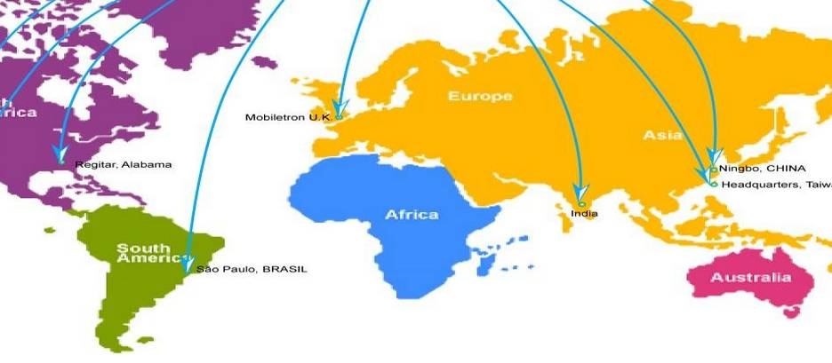

收录于合集
学者简介：
阎学通， 美国加州大学伯克利分校政治学博士，清华大学国际关系研究院院长。世界和平论坛秘书长，《国际政治科学》总编。
本文来源：
《国际政治科学》（季刊）2017年第1期
获取方式：
后台（聊天页面）发送“ 国际政治科学 ”自动获取！
英国的“脱欧”公投获得通过、特朗普赢得美国大选（被称为“黑天鹅现象”）和“反建制主义”思潮的兴起，这些现象与许多国际关系理论家的预测相反，这使我们不得不认真思考国际关系理论的研究方向。由于２０１６年的“反建制主义”思潮和“黑天鹅现象”明显不符合自由主义和建构主义的理论原理，人们下意识地转向现实主义理论寻找答案。现实主义之所以能够较好地解释这些现象，很大程度上与其理论假定相关。
一、现实主义理论假定国家行为源于追求利益，因此可以解释为何西方国家重新重视主权的作用。 现实主义认为，为了维护本国的利益，一些国家采取区域合作的方法应对全球化的伤害，因此区域化不过是它们应对全球化的手段，是对全球化的反动。这与自由主义和建构主义将区域化视为全球化的一部分不同。由于发达国家长期无法彻底摆脱２００８年金融危机的影响，人们开始怀疑区域化有助于维护本国利益的说法。许多美国人认为，美国的相对衰落是参与全球化的结果，而北美自贸区也起不到维护美国利益的作用，因此特朗普提出“美国优先”的口号对他们有很大的吸引力。许多英国人看到保留英镑不参加欧元区的政策使英国遭受的危机伤害小于欧元区国家，因此支持“脱欧”。
现实主义将主权视为国家的首要利益，是现代民族国家生存的根本，其性质与所有权力一样是零和的。国家所让渡给国际组织的主权与其失去的主权相等，让渡得越多，自主权就越差，在危机面前的自救能力就越低。２０１１年以来，中东地区的多场战争给欧盟成员造成了严重的难民危机。当社会安全危机临头时，欧盟成员意识到了将边界主权让渡给欧盟的安全危险，开始质疑自由主义关于让渡主权利大于弊的集体合作思想，于是一些成员违反《申根协定》开始管控边界。这如同中国小岗村的村民为了生存，违背人民公社的规定重新搞单干一样。
国际权力是依据国家的实力分配的，也是零和性质。崛起国的实力增长使其国际权力扩大，从而导致相关国家特别是主导国的国际权力下降。２００８年之后，西方国家实力的增长慢于崛起国，处于相对衰落的境况。面临扩大本国国际权力已不可能的现实，防止本国主权利益受损则成为现实选择，如今西方国家已不再像冷战结束初期那么强调“人权高于主权”了，而是强调要维护国家的主权利益，于是贸易保护主义上升。
二、现实主义理论假定国际体系是无序的，因此可以解释为何全球化造成的国际冲突会多于合作。 国际体系是一个没有世界政府的社会，在这个社会体系中，所有的行为体（国家、国际组织、跨国公司等）都根据自己的利益需求来决定自身行为。由于各种行为体所追求的利益多数是相互冲突的，因此冲突成为国际政治的核心，而国际合作仅是协调利益冲突的一种方法。国际合作并不保障成员国由此可获得比采取对抗方式更大的收益，而且合作者获得的收益也不是公平的，因此国际行为体在无条件的情况下，会倾向选择对抗方式来实现自己的利益，而只有在特殊条件下才选择合作方式。例如，“伊斯兰国”是个国际行为体，其武装力量成员来自几十个国家，选择了以武装对抗为主要战略。
自由主义和建构主义认为全球化可以推动国际社会的进步，而现实主义则认为在缺少世界政府的条件下，全球化造成的国际冲突必然大于国际合作，因为全球化为局部冲突向全球扩散提供了便利条件。恐怖主义、两极分化、大规模杀伤性武器扩散、金融危机、非法移民、颜色革命、黑客攻击、环境污染、流行疾病、电信诈骗、卖淫、贩毒、走私，等等，都是在全球化条件下形成的全球性问题，于是全球治理相应而生。全球治理之所以兴起，就是因为全球化造成的全球性问题越来越多，越来越严重，而且越来越难以遏制。２０１６年被称为“反全球化”或“逆全球化”的行为，不过是人们抵御全球威胁的本能反应。
自由主义和建构主义认为，全球化促进了不同群体之间的交流和理解，因此可以增强群体间的互信，从而促进国际合作。而现实主义则认为，在无序体系中的全球化不但不能增进互信，而且会强化群体的认同意识，制造更多的敌意和冲突。群体向心性是人的天然本性，防止其他群体伤害本群体的利益是人的本能。全球化扩大了不同群体之间的接触范围和频率，不可避免地要增加不同群体之间的利益冲突。排斥移民仅是这些冲突的一种表现，管控外国非政府组织、限制进口外国文化产品、限制穿戴宗教服饰、批判他族的政治或宗教信仰，都属于同类性质。自１９９８年中美恢复领导人互访后，多年的交流不但没有增强双边互信，反而加剧了双方的战略对抗。奥巴马的“重返亚太”战略是针对中国的，特朗普执政后的对华政策进一步加剧了双边关系的对抗。

三、现实主义理论假定历史发展是非线性的，因此可以解释为何自由主义思潮出现衰退趋势。 现实主义理论是建立在观察古代历史和现代历史共性的基础上的，理论解释要符合所有独立国际体系的共同现象。由于自古以来，在所有国际体系中，和平与战争都是两种轮流发生的现象，因此现实主义假定历史是非线性发展的。罗贯中观察到中国历史上有“分久必合，合久必分”的现象，这种现象体现了历史非线性发展的假定。如果“统一”和“分裂”这两种现象是轮流发生的，那么促成统一和分裂的思潮也必然是轮流成为主流观念的，与之相关的有利于统一或分裂的规范也会轮流获得主导地位。
与现实主义不同，自由主义和建构主义从古代与现代国际体系的差别入手，建立的是解释为什么现代国际体系与以往古代体系不同的理论。这两个流派多采用现代历史论证其观点，很少用古代历史为论据。因此，这两种理论认为国际思潮和国际规范只会沿着符合进步的原则向前发展，不会发生逆转。福山的《历史的终结》代表了自由主义的历史观。他认为，冷战的结束意味着意识形态之争的结束，自由主义成为人类的终极主导价值观，再也不会有任何意识形态能与自由主义一争高下了。然而，２０１６年“反建制主义”思潮的兴起，对自由主义形成了严重挑战，特别是特朗普在自由主义的旗手国———美国赢得了大选，这对线性的历史观构成了挑战。
国际主流价值观是制定国际规范的指导思想，当自由主义的主导地位开始动摇时，依据自由主义原则制定的国际规范也不可避免地会受到挑战。例如，自由贸易原则受到了公平贸易原则的挑战；资本自由流动原则受到防范金融风险原则的挑战；保护难民的人道主义原则受到控制非法移民原则的挑战；保护知识产权原则受到了知识服务于人类原则的挑战；各国都有承担全球治理责任的原则受到“共同但有区别责任”原则的挑战。
中国是当前最有潜力的崛起大国，中国的青年学者们对中国崛起所起的作用必然会超越老一辈。面对２０１６年的“黑天鹅现象”，国际关系理论研究者不得不再次面对国际关系理论预测力不强的现实问题。多年的经验表明，哲学思辨方法是无法提高理论的预测力的，而目前又没有任何方法比科学实证方法能更有效地增强理论的预测力。运用科学实证研究方法费时费力，实证研究的理论成果很少。希望我国的青年学者发挥知识优势，通过科学实证研究方法创造出预测力强的国际关系理论。《国际政治科学》愿为科学实证的理论成果提供发表的便利。
阎学通
2017年2月
声 明
国政学人微信公众平台系非盈利学术平台。文章出自最新的南大CSSCI和北大中文核心来源期刊。目的是方便广大学人进行学术研究，促进学术的传播和交流，不做任何商业用途。如有任何权利问题，请直接与我们联系。